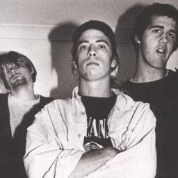

The Band

How it all started
Cobain and Novoselic's first band lasted barely a few weeks before it disbanded, leaving the pair to move on. However, the duo eventually discovered that Melvins could pull $80 a night for one show. Inspired, Cobain and Novoselic started a Creedence Clearwater Revival cover band, in which Cobain played drums and Novoselic sang and played guitar. That band was short-lived as well. Some months later, Cobain and Novoselic met drummer Aaron Burckhard. While the new band never used the name, it was the first incarnation of Nirvana.
Burckhard lasted only a few months and Melvins' drummer Dale Crover filled in until Novoselic and Cobain met Chad Channing. The trio recorded their debut album Bleach, released in 1989. Channing left the band in 1990 and was briefly replaced by Crover and Mudhoney drummer Dan Peters. Novoselic contributed to the writing of various songs, providing ideas for Cobain.
Later in 1990, Melvins' singer-guitarist Buzz Osborne encouraged Novoselic and Cobain to check out a punk band called Scream. The pair were impressed by their drummer, Dave Grohl. A few weeks later, Scream disbanded, and Grohl placed a call to Osborne for advice. Osborne gave him Novoselic's phone number, and Novoselic invited Grohl up to Seattle (from San Francisco, where Scream broke up). Grohl passed the audition and joined Nirvana. Grohl was Nirvana's fifth and final drummer. This was after the first few recordings of songs from their Bleach Album. Novoselic spent the following months with Nirvana traveling to various labels as the band shopped for a deal, eventually signing with DGC Records.
In the spring of 1991, the band entered Sound City Studios in Los Angeles to record Nevermind. Novoselic helped write the song "Polly". Upon its release, Nevermind (1991) exceeded all expectations and became a worldwide commercial success. Nevermind had launched the band as a worldwide phenomenon with their hit single "Smells Like Teen Spirit".
In 1992, at the MTV music awards show, Nirvana would win awards for Best New Artist in a Video and Best Alternative Video for "Smells Like Teen Spirit." At the show, Nirvana performed "Lithium". When Novoselic started playing the opening bass riff, he signaled that he could not hear his bass. Instead of continuing to play, Novoselic threw his bass guitar in the air, to perform a "Bass Toss". He failed to catch it, later stating that he misjudged the height; he further stated that he "faked like he was knocked out." Musician Brian May ran to give him medical attention; he did not suffer any injuries.
Novoselic, Aaron Burckhard and Cobain in 1987
During Nirvana's 1992 Reading concert, Novoselic sang "The Money Will Roll Right In" with Cobain. Novoselic was an occasional vocalist and backing vocalist in Nirvana, occasionally singing "Scoff" and "Rape Me" at live shows. Novoselic stated that "I kind of discovered my voice for the first time, and the more I did it, the better it got."
In September of 1993, Nirvana's third album In Utero, debuted at number one on the billboard 200. However, the recording sessions mixed by Steve Albini were criticized by the band members, saying some songs "didn't sound perfect", as well as the band agreeing that Novoselic's bass lines sounded "too low". In Utero sold 3.5 million copies in the United States. In November of that year, Nirvana performed on MTV Unplugged with Lori Goldston playing cello, the introduction of guitarist Pat Smear, and Novoselic playing acoustic bass guitar, accordion, and acoustic rhythm guitar. This live performance was released a year later as an album, named MTV Unplugged in New York, which earned a Grammy Award for best alternative music performance.
Prior to their 1994 European tour, the band scheduled session time at Robert Lang Studios in Seattle to work on demos. For most of the three-day session, Cobain was absent, so Novoselic and Grohl worked on demos of their own songs. The duo completed several songs, including "Exhausted", "Big Me", "February Stars", and "Butterflies". On the third day of the session, Cobain finally arrived. The song "You Know You're Right" was the band's final studio recording.
Nirvana ended abruptly in April 1994 following Cobain's death. For most of the rest of that year, Novoselic retreated from the spotlight. One of a few public appearances came that September at the MTV Video Music Awards, where the video for Nirvana's "Heart-Shaped Box" was awarded for Best Alternative Video. Novoselic took the opportunity to pay tribute to Cobain.
Following the end of Nirvana, Novoselic worked on completing the With the Lights Out box set and From the Muddy Banks of the Wishkah album, as well as pushing for release of a 20th anniversary album for Nevermind.(...)